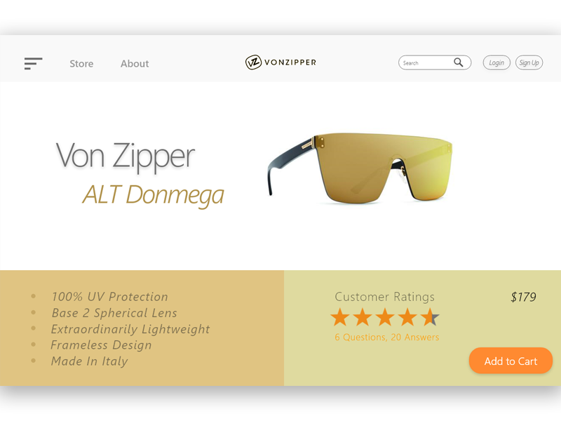
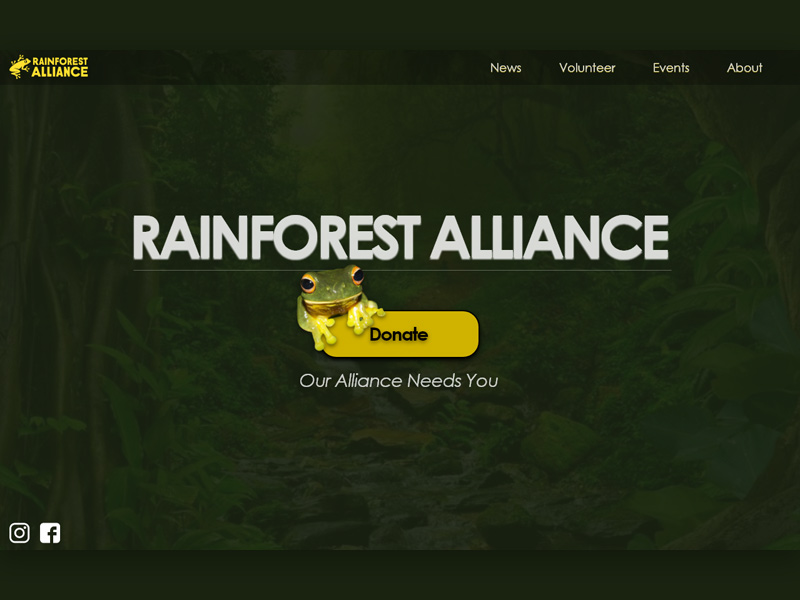
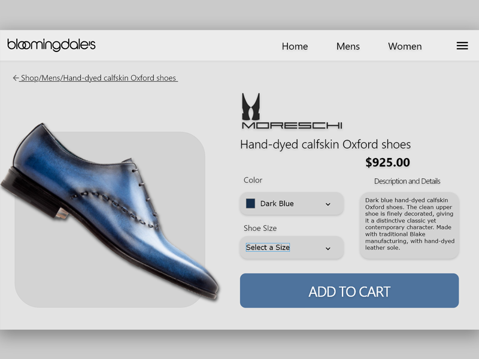

The main focus of a landing page ultimately is to sell products or a message. The design below presents the product in a nice minimal format without too many visual distractions. The products features a husk gold lense, so the screen was built around matching consistency. The product screen includes a call-to-action button where the user can make the purchase reality in a simple step.

Rainforest Alliance is a non-profit organization working at the intersection of business, agriculture, and forests to make responsible business the new normal. This was an experimental re-design for the organization's homepage with a more modern approach full size approach. By placing bold call-to-action button gets users to focus on donating to the organization which is a major part of their funding. The animated perception the Orange-thighed frog provides in the center of the page provides a nice visual for the user.

This screen is an example landing page for a product where the user is likely to need a bit more detail. One of the attention grabbing features of this landing page is the product itself. For this UI, I wanted to user to see an enlarged version of the product. Along with the product imagery being large, the call-to-action button was meant to be grabbing. Matching orient blue across the page makes for a consistent visual experience.
